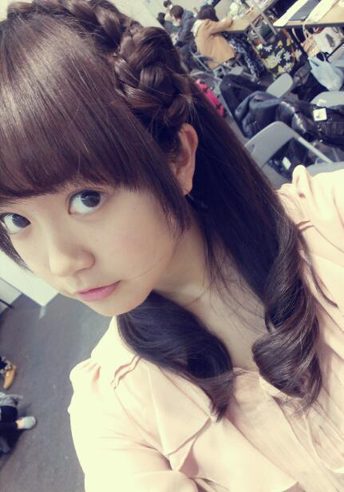
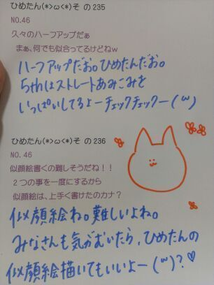

| 2013/03 02 Sat | ひめたん大図鑑39(2012年3 月） |
そういやこの前の京都個握の時の
髪型写めあげてなかたーよ！
おはな∩^ω^∩

ひめたん大図鑑とは何か。
それは、ひめたんが受験とかテストとかテストとかテストでちょーっと日記書く時間がないぞーって時に登場する、
いわゆる「過去の質問返しをまとめたもの」って感じかな。
過去なので時制とかおかしなことになる質問も中にはあるかもだけど、
ま、そゆことなんでね(*^^*)
820
 握手会のとき投げキスしてくれますか?
握手会のとき投げキスしてくれますか?
恥ずかしいからやー!
うそですリクエストお待ちしております(^-^)
821
好きなサイリュウムの色はなんですか?
♪もーもーいーろー!
はいももいろですピンクです(*^^*)
...といいたいところですが、サイリュウムはオレンジが最強って聞いたことありますよ。でもピンク!
822
ひめたんの3大欲求は?＼(^O^)／
ちなみに僕の3大欲求は会いたい、握手したい、、話したい!キラッ
そんなこと言ったらひめたんも会いたい、握手したい、話したい!
し、やってみたいことありすぎて3っにはおさまりませぬ。
人間じゃないのかしら(∀)
823
推しはさゆにゃんだけど応援していいー?
嬉しいよー(*/ω＼*)
ありがとうございます!
ひめたんもさゆにゃん推しになろかな。にゃ!
824
『左胸の勇気』これも南流石さんカナ?
その通り!
左胸も流石先生に振り付けしていただきました(^O^)
825
フード隊のラストやってんけどちゃんと覚えてくれてるかな?
ああ可愛いらしいフード隊のみなさま(*^^*)
覚えておりますよ!滋賀だよね?あってるよねー?
826
ひめたん!!!!3月のカレンダーお願いします♪♪
遅くなりすぎましたごめんなさいーいいぃ!
...なんか上手い具合に貼れない←
画質粗いよーなんでー?
きれいに貼れるようになったらまた再アップします!
それまでこの小さいカレンダーで我慢してー(;'∩`)
827
ひめたんの私服はLIZLISA?
よくわかりましたね!
LISLISA可愛いよね(*^^*)ひめたんLISLISAのワンピ好きだよー♪
ひめたんそいえばさゆにゃん(井上小百合chan)とみゅみゅ(若月佑美chan)と
何かおそろいのLISLISAグッズ持ってんの!
828
次のシングルの握手会から絶対福岡から行くから待っててくれるかな?
ほんまにー(^ω^)♪
そりゃもちろん嬉しいけれども、無理はせんでね?
福岡行きたいなあ。でも一回イベントで福岡行ったんだよな。
また行けるかしらー?
乃木坂の誰かがおじゃましたらよろしくお願いしますねっ☆
829
この富山弁わかる?「だら」「〜せんなん」「だいて」
だら→だよ
〜せんなん→〜しようよ
だいて→だだだだ抱いてっわら
にゃー完全に勘ですこれ。わっからーん!
830
人気のあるお好み焼き屋さんを教えて下さいな?
広島人はおうちでお好み焼き焼いちゃいますので
そーゆー情報にはうといっちゃうといけど...
前にイベント行ったときにお邪魔した「あとむ」さん!
お好み村の4Fにあるんだけれども。
美味しかったよー♪
有名人さんもたくさん食べにいらしたって聞いたし(^^)
さゆりんご(松村沙友理chan)ななせまる(西野七瀬chan)
ろってぃ(川村真洋chan)とひめたん4人でサインも書いたしね♪
831
ひめたんは、グアムに行ったことある?
なっしんぐ('`)←
楽しそーう行きたーいけど飛行機が怖ーい。
けどやっぱし行きたい!
誰か連れてってください☆
832
ひめたん17歳になったよ///
わーお誕生日おめでとう!
華のせぶんてぃーんデビューだね(//ω//)
響きかっこいいなあ。せぶんてぃーん!
ケーキ食べた?ローソクは17本さしたのかしら。
833
握手会で覚えてるって言ってたけどホント?若干怪しかったけどな〜。
にゃ。
お名前とお顔が一致するにはどうも時間がかかるようで(・∀・;)
お名前聞いたら「あっ」てなるし
お顔みたら「あっ」てなるのですよ。ここまで事実!
完璧に覚えるまでひめたんに時間をくださいな?
834
ひめたんショートカットにしたことある?いつぐらいからその髪型なの?
それがショートは生まれてこの方一回もないですー
一番短くても肩にはついてたと思う(^^)
今の髪型は8月のオーディションから変わってないですよ!
835
魚は食わず嫌いですか?うなぎは好きですか?
お魚さんの中には食わず嫌いの子もいると思う←
骨がないとまだ食べれるんだけどね。お刺身とかお寿司とかね。
煮魚さんはなんか苦手。
うなぎさんは小骨が好きくない...(。・x・。)ごめんね好きになるから←
836
強いて言うならまだ一番好きな魚は??
お刺身とかだとサーモン好きっ∩^ω^∩☆
鮭フレークなんかはのりたまとおんなじくらい好き。
ご飯のおともだよっ
837
魚介類、海老とかカニ、なんかは大丈夫なのかな?
あーシーフード系はさらに苦手。食べれませんカニみたいに食わず嫌いの子もいるけど。
えび、生のえびは怖くて食べたことないけど
フライにしたら美味しいよね(//ω//)えびふりゃー。
838
たこ焼き食べれる?
たこ焼きのたこは最近食べれるの!ほんと最近。今年の1月の話。
それまではたこ抜いて「焼き」食べてた(ω)
焼き。美味しいってばよ♪

(＊´・ω・＊)
コメント(127)
2013/03/02 00:06